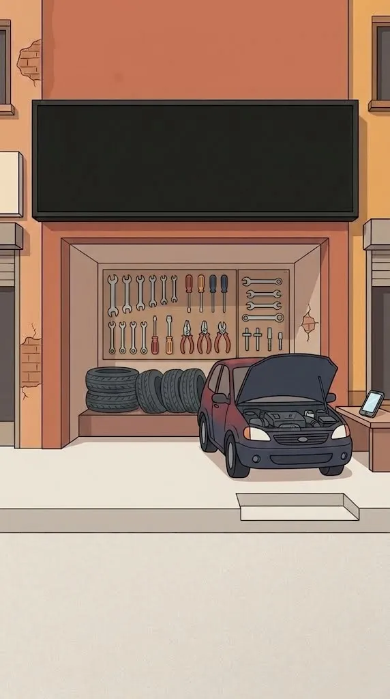

Oto servis ve tamirhaneler · Antalya ve Türkiye geneli
Bakımı gelen müşteri
kendiliğinden gelsin.
Müşteriniz aracını bir kere getiriyor, sonra unutuyor ya da karşıdaki servise gidiyor. Kaydı defterde, telefonu kâğıtta. Biz plakayla açılan müşteri kaydını, bakım hatırlatmasını ve Google'da doğru görünen bir servisi kuruyoruz.
Kaydırın, dükkânınızın hikâyesi
01 · Tanıdık geldi mi?
Oto servis için dört dert.
- 01Google'da “kapandı” ya da sahipsiz
Sahipsiz kalan harita kaydı yüzünden servis kapalı görünüyor, telefon çalmıyor.
- 02Müşteri defterde, bakım akılda
Hangi araç ne zaman bakıma gelmeli, kimse bilmiyor; müşteri hatırlatılmıyor.
- 03Usta tamirdeyken telefon çalıyor
Fiyat ve randevu soran aramalar iş başındayken cevapsız kalıyor.
- 04Güven eksik
Yeni müşteri önce sitenize, yorumlara ve dükkânın fotoğrafına bakıyor.
02 · Ne kuruyoruz
Tek sistem, sizin adınıza.
- 01Hizmet sayfalı servis sitesi (bakım, fren, elektrik, klima…)
- 02Google İşletme Profili kurtarma ve düzenli yönetim
- 03Plaka ile açılan müşteri kaydı ve servis geçmişi
- 04Kilometre ve tarihe göre otomatik bakım hatırlatması
- 05Aracınız hazır mesajı ve memnuniyet sorusu
- 06WhatsApp'tan randevu ve ön bilgi asistanı
Paketler 19.900 TL'den başlar; site, alan adı ve hesaplar sizin olur.
03 · Kendiliğinden işler
Mesajlar kendiliğinden gider.
Ahmet Bey, 34 ABC 123 plakalı aracınızın 10.000 km bakımı yaklaştı. Bu hafta gelirseniz yağ değişiminde %10 indirim.
otomatik ✓✓Perşembe sabah uygun mu?
müşteriAracınız hazır, 18:00'e kadar teslim alabilirsiniz. Yapılan işler ve fatura bu bağlantıda.
otomatik ✓✓04 · Sonuç
Müşteri kapıda.
Yeni müşteri Google'dan, eski müşteri hatırlatmadan geliyor. Siz işinize bakın; sistemi biz kurar, birlikte yönetiriz.


Ücretsiz dijital ekspertiz · 2 dakika
İşletmeniz neyi kaçırıyor?
Sitenizin ya da Google Haritalar kaydınızın bağlantısını yazın; 4 alanda müşteri kaybettiren eksikleri gösterelim.
Sık sorulanlar · Oto servis
Merak edilenler.
Mevcut Google kaydımı kurtarabilir misiniz?
Sahipsiz ya da “kapandı” görünen kayıtlarda sahiplik talebi, bilgi düzeltme ve itiraz sürecini sizin adınıza yürütüyoruz. Süreyi Google belirler; genellikle birkaç gün ile birkaç hafta arasıdır.
Ustalarım bilgisayar bilmiyor, kullanabilir mi?
Kayıt ekranı telefondan plaka yazıp açılır; tek ekran, büyük düğmeler. Teslimde ustalarınıza yerinde gösteriyoruz.
Hatırlatma mesajları nasıl gidiyor?
Müşterinin izni olan numarasına WhatsApp ya da SMS ile. Ticari ileti kurallarına (İYS) uygun kurulur.